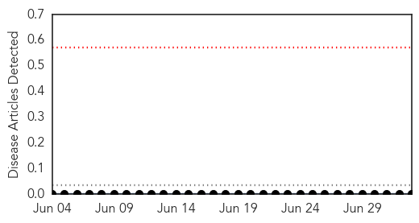
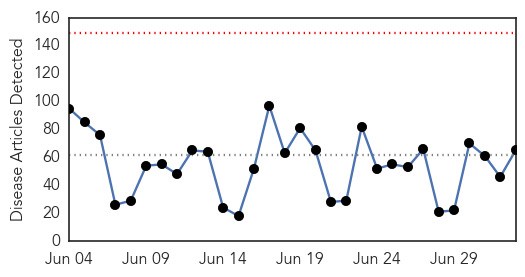
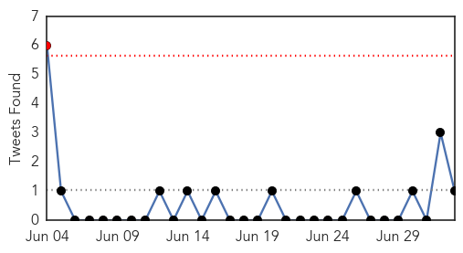
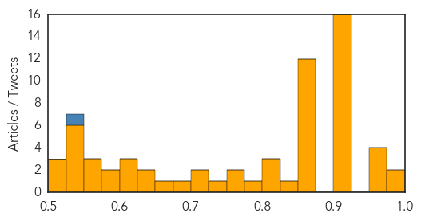

Hemmorhagic Fever
30-Day Web Trend
0 alerts, 0 warnings

30-Day Twitter Trend
0 alerts, 0 warnings

Article Locations

Article Confidences

Top Articles:
-
No articles found for Jul 03, 2014
Top Tweets:
-
No tweets found for Jul 03, 2014
Unknown
30-Day Web Trend
0 alerts, 0 warnings

30-Day Twitter Trend
1 alerts, 0 warnings

Article Locations
Article Confidences
Top Articles:
- 0.997
- Number of norovirus cases increases in Grand County
- 0.980
- Pilgrims urged to defer Hajj
- 0.971
- International doctors to check malaria outbreak in Tripura
- 0.961
- Manila urges Muslims to delay Hajj due to MERS
- 0.959
- International doctors to check malaria outbreak in Tripura
- 0.958
- Philippines urges its Muslims to postpone Haj pilgrimage to Saudi Arabia
- 0.917
- Chicago Tribune
- 0.917
- Chicago Tribune
- 0.917
- Chicago Tribune
- 0.917
- Chicago Tribune
- 0.917
- Chicago Tribune
- 0.917
- Chicago Tribune
- 0.917
- Chicago Tribune
- 0.917
- Chicago Tribune
- 0.917
- Chicago Tribune
- 0.917
- Chicago Tribune
- 0.917
- Chicago Tribune
- 0.917
- Chicago Tribune
- 0.917
- Chicago Tribune
- 0.917
- Chicago Tribune
- 0.917
- Chicago Tribune
- 0.914
- Cebu News, The Freeman Sections, The Freeman
- 0.866
- Kyler Cook, 18, and Brodie Fox, 10, both from Tiffen, Ohio, walk through the storm surge of Hurricane Arthur, in Ocean Isle Beach, North Carolina
- 0.866
- Storm clouds fill the sky as Hurricane Arthur looms offshore, in Myrtle Beach, USA
- 0.866
- ShelterBox and Rotary help Serbian flood survivors
- 0.866
- Truck drivers seized in Iraq to be flown to Turkey on Thursday
- 0.866
- Islamist militants release 32 Turkish truck drivers seized in Iraq-media
- 0.866
- Workers clean up after what local media describe as a stone facade collapsed underneath the Brooklyn Bridge after an unusually strong summer storm in New York
- 0.865
- Philippines urges its Muslims to abort Hajj
- 0.859
- Saudi MERS: Philippines urges its Muslims to abort Hajj
- 0.859
- Filipino Muslims urged to abort Hajj due to MERS
- 0.858
- WHO targets elimination of TB in over 30 countries - World
- 0.857
- Saudi MERS: Philippines urges its Muslims to abort Hajj
- 0.853
- Tripura govt plea to centre on malaria outbreak
- 0.831
- Postpone Hajj pilgrimage due to MERS
- 0.811
- Tackling JE head on
- 0.810
- Latvia announces emergency regime over African swine fever
- 0.800
- WHO targets elimination of tuberculosis in over 30 countries
- 0.787
- WHO Targets Elimination Of TB In Over 30 Countries
- 0.767
- Filipino Muslims urged to abort haj due to MERS outbreak
- 0.767
- Specialists identify retrovirus that killed 5 babies
- 0.726
- Pervasive violence against healthcare
- 0.702
- UN health agency presents new plan to eliminate tuberculosis in low-burden countries
- 0.701
- 6 hospitals looted or burned in a few months, at least 58 people killed in the hospitals
- 0.676
- Latvia Orders Pig Cull to Stem African Swine Fever — Naharnet
- 0.653
- New York Amsterdam News: The new Black view
- 0.640
- Latvia may declare state of emergency to cope with African swine fever
- 0.636
- Latvia may declare state of emergency to cope with African swine fever
- 0.616
- Japanese encephalitis threatens to run over Modi's constituency
- 0.615
- African swine fever threatens Latvian pork
Showing top 50 articles...
Top Tweets:
- 0.540
- RT: On 25 and 27 June 2014 SaudiArabia reported additional 3 cases of Middle East respiratory syndrome MERS